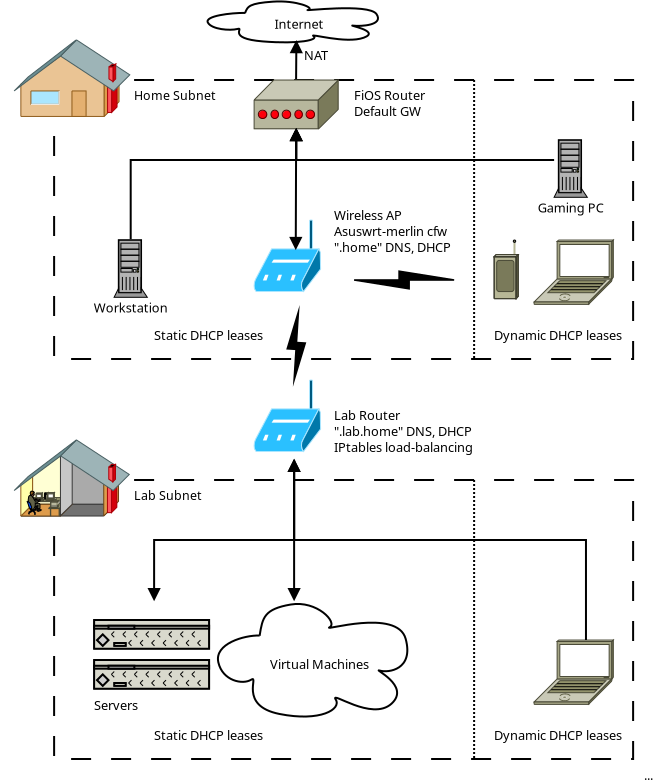

I purchased some server hardware and faced some interesting network design decisions. Here's what I ended up with:
I bought a GL.iNet wireless AC travel router to connect my server hardware with the home network. I wanted the new "lab" connected wirelessly to maximize flexibility in where the servers could live long term (with potential noise and power demands). I also wanted the ability to quickly disconnect my lab hardware and take it on the road for demos. Those two considerations drove a lot of decisions.
After connecting the router as a client to my home's Wi-Fi, I set the lab router's wired LAN to a /22 subnet in the class C range to provide room for expansion. Then I disabled NATing so traffic could cross easily between the home and lab networks in both directions without port forwarding. The wireless connection is still DHCP so the lab router is not dependent on the environment in the WAN zone.
I don't have much choice in my default gateway device without double-NATing: my Verizon FiOS coax modem performs routing duties within the home network and NATs to the greater Internet. I added a route to the modem's routing table to direct lab traffic to the lab router IP address, which I would later configure with a static DHCP lease. A while ago I set up an Asus Wi-Fi router in Wireless Access Point (bridged) mode, so the home network is flat across wired and wireless devices.
One tweak I found necessary to allow traffic from the lab to reach the internet: I changed the FiOS router's LAN netmask to include both home and lab networks. This was a bit of a lie, but necessary for lab traffic to be NATed, and it did not negatively impact internal traffic (you might worry lab traffic would no longer route to the lab router, but it works).
To have any flexibility in configuring DNS, I needed to get DNS functions off of the FiOS router. It only has the ability to set simple one-level hostnames with a single IP address, which is insufficient. The Asus router did not have the ability to host DNS and DHCP (dnsmasq) in bridged mode, so I researched custom firmware options. I installed Asuswrt-merlin on the Asus AP.
I set a static IP configuration, then created a startup script that would add a few entries to the /etc/ethers and /etc/hosts files and run dnsmasq. The lab router and my workstation would have static DHCP leases and other devices dynamic leases like normal. I set DHCP option 3 (default gateway) to the IP address of the FiOS router, and added a "server" line for ".lab.home" to the IP of the lab router. Then I disabled DNS and DHCP on the FiOS router.
In this configuration, devices in the home network function correctly in the absence of the lab router, but they can use it to reach the lab when it is available.
Lastly I set up dnsmasq on the lab router to handle DNS and DHCP for the lab network. Since I would be deploying OpenShift, I would need to control several DNS entries including wildcards, plus issue static DHCP leases to known hardware and VMs. As an additional feature, I added additional IP addresses to the LAN ethernet interface for load-balancing endpoints and balanced them using DNAT iptables rules in the prerouting table (and corresponding SNAT rules so return traffic would work).
That's it, that's the entire configuration. The lab router controls the lab subnet, and in the home subnet the FiOS box does routing and the Asus WI-FI access point does DNS and DHCP, correctly splitting traffic between lab, home, and Internet.